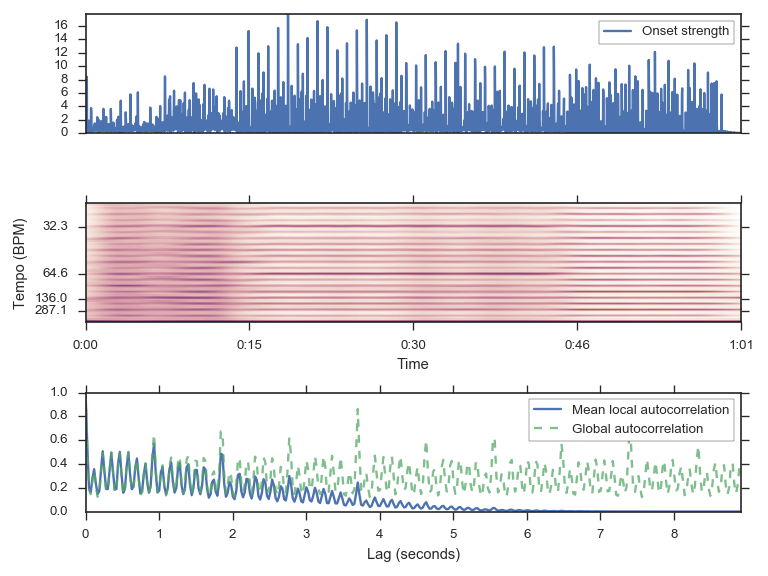

librosa.feature.tempogram¶
- librosa.feature.tempogram(y=None, sr=22050, onset_envelope=None, hop_length=512, win_length=384, center=True, window=None, norm=inf)¶
Compute the tempogram: local autocorrelation of the onset strength envelope. [R27]
[R27] Grosche, Peter, Meinard Müller, and Frank Kurth. “Cyclic tempogram - A mid-level tempo representation for music signals.” ICASSP, 2010. Parameters: y : np.ndarray [shape=(n,)] or None
Audio time series.
sr : number > 0 [scalar]
sampling rate of y
onset_envelope : np.ndarray [shape=(n,)] or None
Optional pre-computed onset strength envelope as provided by onset.onset_strength
hop_length : int > 0
number of audio samples between successive onset measurements
win_length : int > 0
length of the onset autocorrelation window (in frames/onset measurements) The default settings (384) corresponds to 384 * hop_length / sr ~= 8.9s.
center : bool
If True, onset autocorrelation windows are centered. If False, windows are left-aligned.
window : None, function, np.ndarray [shape=(win_length,)]
Window function to apply to onset strength function. By default (None), an asymmetric Hann window.
norm : {np.inf, -np.inf, 0, float > 0, None}
Normalization mode. Set to None to disable normalization.
Returns: tempogram : np.ndarray [shape=(win_length, n)]
Localized autocorrelation of the onset strength envelope
Raises: ParameterError
if neither y nor onset_envelope are provided
if win_length < 1
if window is an array and len(window) != win_length
Examples
>>> # Compute local onset autocorrelation >>> y, sr = librosa.load(librosa.util.example_audio_file()) >>> hop_length = 512 >>> oenv = librosa.onset.onset_strength(y=y, sr=sr, hop_length=hop_length) >>> tempogram = librosa.feature.tempogram(onset_envelope=oenv, sr=sr, ... hop_length=hop_length) >>> # Compute global onset autocorrelation >>> ac_global = librosa.autocorrelate(oenv, max_size=tempogram.shape[0]) >>> ac_global = librosa.util.normalize(ac_global) >>> # Estimate the global tempo for display purposes >>> tempo = librosa.beat.estimate_tempo(oenv, sr=sr, hop_length=hop_length)
>>> import matplotlib.pyplot as plt >>> plt.figure(figsize=(8, 6)) >>> plt.subplot(3, 1, 1) >>> plt.plot(oenv, label='Onset strength') >>> plt.xticks([]) >>> plt.legend(frameon=True) >>> plt.axis('tight') >>> plt.subplot(3, 1, 2) >>> # We'll truncate the display to a narrower range of tempi >>> librosa.display.specshow(tempogram[:100], sr=sr, hop_length=hop_length, >>> x_axis='time', y_axis='tempo', ... tmin=tempo/4, tmax=2*tempo, n_yticks=4) >>> plt.subplot(3, 1, 3) >>> x = np.linspace(0, tempogram.shape[0] * float(hop_length) / sr, num=tempogram.shape[0]) >>> plt.plot(x, np.mean(tempogram, axis=1), label='Mean local autocorrelation') >>> plt.plot(x, ac_global, '--', alpha=0.75, label='Global autocorrelation') >>> plt.xlabel('Lag (seconds)') >>> plt.axis('tight') >>> plt.legend(frameon=True) >>> plt.tight_layout()
